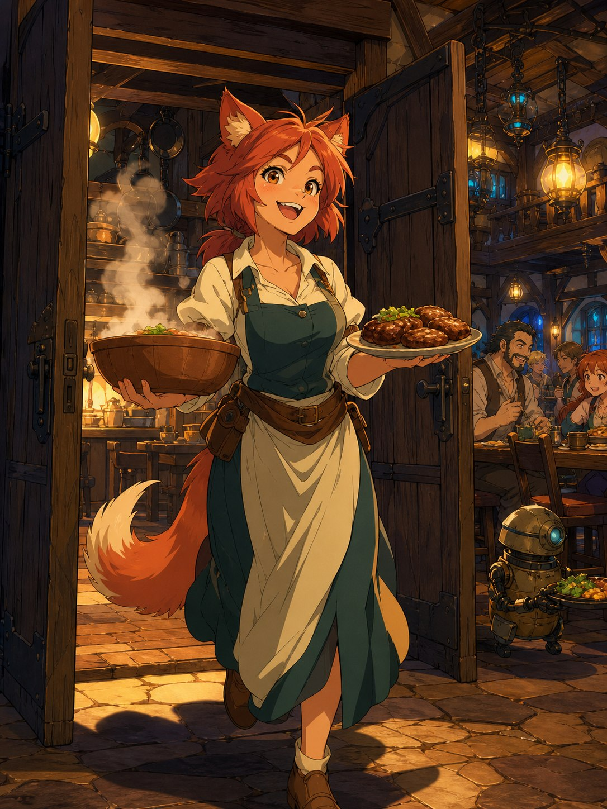
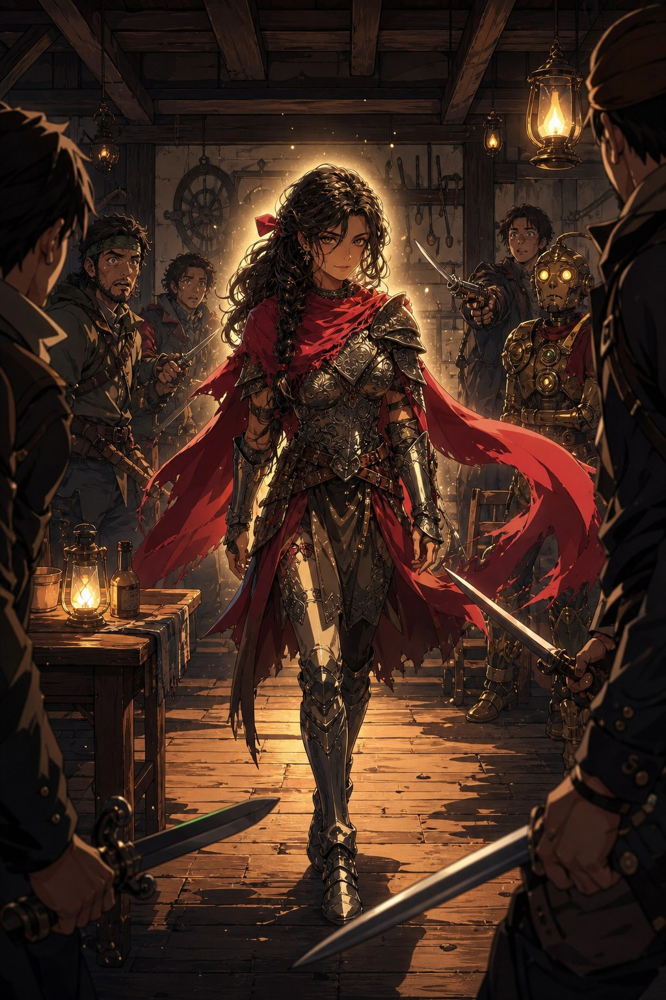

에일라가 사라진 주방에는 싸운 흔적까지는 없었다. 다만 급하게 떠난 듯 집기가 흩어져 있었고, 조금이라도 시간이 있었다면 그것들을 치우지 않았을 리 없는 에일라였다. 주방 문 앞에는 톱니바퀴와 파이프, 스위치 같은 부품이 떨어져 있었다. 지나가던 주민도 옆집 아저씨도 아무것도 보지 못했다는데, 근처에서 놀던 아이 하나가 입을 열었다. 어떤 클랭크랑 경비병 둘이 에일라를 급하게 데려갔다고. 스트레가는 자기도 가겠다며 난리를 피웠지만 다친 팔에서 다시 피가 흘렀고, 토라스가 응급처치를 하고 뒤를 따랐다.
시청 지하
시청 앞을 막아선 경비병을 설득해 지하 집무실로 내려가자, 메이퀸이 사정을 설명했다. 광장의 습격을 조사한 결과, 최초의 인형이 가장 먼저 노린 것이 에일라였다는 증언이 일관되게 나왔다는 것이다. 에일라는 비명을 지르지도, 피하지도 않았고, 대신 스트레가가 다쳤다. 그래서 다급히 클락시를 보내 에일라의 안전을 확보했다고 했다. 그 말이 채 끝나기도 전에, 메이퀸의 말을 받아적던 자동서기 인형이 손을 멈추더니 갑자기 에일라를 공격했다. 짧은 전투 뒤, 계단 위에서 철컥철컥 금속 마찰음이 들려왔다. 시청 소속 인형들이 명령 체계를 잃고 몰려오고 있었다. 클락시가 “유효 응답 시간 초과. 재시도중” 하고 반복하는 사이, 시계탑 종이 어긋난 음으로 울리며 건물이 흔들리기 시작했다.
메이퀸은 결단을 내렸다. 시청은 요새가 아니며, 에일라가 있는 한 공격은 계속될 것이라고. 그녀는 지금 자신이 움직일 수 있는 유일한 전력인 세 사람에게 부탁했다. 에일라를 데리고 브라에스를 떠나, 팔릭스가 짚어준 린들필드로 가서 기계 심장의 근원을 조사해달라고. 지난 부탁의 보상과 이번 착수금을 함께 얹고, 말 세 마리까지 내주었다. 시청 앞 광장은 이미 축제의 흔적조차 없는 전장으로 변해 있었다. 검은 원통형 대형 자동장치가 주변을 스캔하듯 고개를 돌리고, 경비병들이 간신히 방패로 벽을 만들어 막고 있었다. 에일라가 나오자 기계들이 일제히 그녀를 바라보았다. “이것들이 모두, 저 때문에 일어난 일입니까.” 에일라의 눈빛이 처음으로 조금 흔들렸다. 경비병들의 필사적인 외침을 뒤로하고, 그들은 도시를 빠져나왔다.
모닥불 앞에서
린들필드까지는 한 번쯤 야영을 해야 하는 거리였다. 도중의 조우를 정리하고 불을 피운 밤, 자글롬이 자연스레 불침번을 섰고, 에일라는 불 앞에 앉아 몸을 덥혔다. 아르카딘이라는 이름에 대해 묻자 에일라는 기억나지 않는다고, 자신은 인간이며 백스무 해 전의 인간과 연관이 있을 것 같지 않다고 담담히 답했다. 노래를 청하자 그녀는 노래를 부르지 못한다고 했다. 노래란 그저 음정과 박자를 맞춰 소리를 내는 기술일 뿐이라 여겼는데도, 어느 순간부터 할 수 없게 되었다고.
에일라는 자신에게 감정이 거의 없다는 것을 숨기지 않았다. 고마운 마음이 무엇인지 잘 느끼지 못하지만, 어떤 때 감사해야 하는지는 안다고. 여러분이 이렇게 행동하지 않을 수도 있었음을 알기에, 그 행동만으로 감사하기에는 충분하다고. 아침에 눈을 뜨면 일어나야 하는 이유를 먼저 찾고, 찾아낸 뒤에야 몸을 일으킨다고 했다. 일을 하면 누군가에게 도움이 되고, 그것이 자신이 살아 있는 이유였다고. 그 이외에는 밥을 먹을 이유도 숨을 쉴 동기도 없었다고. 다만 살아 있어야 한다고는 느낀다고, 그것이 인간이나 동물 이전에 생물로서 남은 본능일지도 모른다고 했다. 그리고 자신을 살아 있게 하지 못하는 것들에 대한 두려움. “어쩌면 그것이 제 마지막 감정일지도 모르겠습니다. 두려움.” 그러면서 그녀는 조용히 물었다. “저는 왜 살아있어야 할까요. 왜 꽃이 피고, 별이 뜰까요.” 녹티스는, 고블린 친구가 다치는 것이 싫어 스스로 몸을 던진 그 마음만으로도 충분히 인간적이라고 답했다. 감정 가득한 위로보다도, 있는 사실만을 짚어주는 그 말이 더 든든하게 들렸다.
에일라는 서쪽 산맥 너머에서 무서운 전쟁이 벌어지고 있다는 이야기도 들려주었다. 여관 일을 하다 스치듯 들었을 뿐, 궁금하지 않아 알아본 적은 없다고 했다. 기계 인형들이 자신을 마법적으로 감지하는 것 같지는 않다고도 했다. 여관에 틀어박혀 일만 하는 동안 눈에 띄지 않았을 뿐이라고. 인형들은 서로 통신하는 듯 보이지만, 그 통신이 충분하지 않거나, 아니면 명령을 내리는 자의 판단력이 생각보다 높지 않을지도 모른다고. 백스무 해 전에 죽었다는 그 미친 마법사가 아직 살아 있다면, 그것만으로도 엄청난 뉴스일 텐데.

린들필드의 여관
린들필드는 대부분 농가로 이루어진 작은 마을이었다. 길목에 있어서인지 이름도 없이 그저 ‘여관’이라 불리는 곳이 하나 있었고, 손님은 제법 많았다. 어두운 분위기의 주인은 손님 하나하나를 신경 쓸 여유가 없다며, 서빙하는 유리드를 불렀다. 주방 문이 양쪽으로 쾅 열리며, 앞치마에 분주함이 묻은 카타리 소녀가 갓 부친 미트 패티와 김이 오르는 나무 그릇을 양손에 들고 경쾌하게 걸어 나왔다. 붉은 귀가 톡 올라가고 풍성한 꼬리가 신나게 흔들렸다. 유리드 투어리였다. 기계 인형을 유통하는 사람에 대해서는 잘 몰랐지만, 에일라가 갑작스럽게 아르카딘이라는 이름을 묻자 그녀가 무언가를 떠올렸다. 아르카딘을 조사하던 무서운 사람들이 있었다고. 스스로를 ‘잔당’이라 부르던, 어느 도적단 같은 여행자들. 여관에 묵지는 않고 주변 건물을 통째로 임대해 아지트처럼 쓰고 있었다고 했다.

잔당의 아지트
평범한 농가로 보이는 건물의 창 너머로 익숙한 스크롤 상자가 보였다. 잠입해 들어가자 등 뒤에서 누군가 짙은 푸른색 제복 차림으로 원통형 무기를 겨눴다. 우리를 미행했느냐, 이 물건의 사용법을 아느냐고 물었다. 곧 밖에서 붉은 머리에 큰 핼버드를 든 여성과, 얼굴에 표범 무늬가 있는 맨손의 여성이 티격태격하며 들어왔다. “거봐, 내가 걸려들 거라고 했지.” 한 달 반이나 미끼를 놓고 기다린 함정이었던 모양이다. 세 사람이 그 미끼에 걸린 첫 손님이었다.
전투가 벌어지려는 찰나, 조금 뒤쪽에서 부드러운 목소리가 들려왔다. “꼭 싸울 필요가 있을까요. 모두 무기를 내리고 얘기해보면 어떨까요.” 짙은 갈색 머리를 붉은 리본으로 묶고, 갑옷 위에 붉은 머플러를 두른 사람이 걸어왔다. 바람이 불지 않는데도 머플러가 산들바람을 받는 깃발처럼 가볍게 흔들렸고, 어쩐지 여름 바닷가에 서 있는 듯한 향기가 감돌았다. 군복 차림의 남자가 그 이름을 불렀다. “레이피어.” 그녀가 싱긋 웃으며 말을 이었다. “언데드가 아닌 사람들끼리는, 대화로 해결해보는 게 어떨까요. 군단의 잔당 여러분.” 아르카딘의 흔적을 쫓던 세 사람과, 같은 이름을 쫓아 산맥을 넘어온 자들이 그렇게 마주쳤다. 어디선가 들어본 것 같은 이름들, 어딘가 낯익은 듯한 사람들 앞에서 이야기가 잠시 멈춰 섰다.